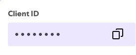

Eddy
Eddy Spotify setup
Create your Spotify developer app
- Open the developer dashboard. Sign in with the Spotify account you’ll use to develop your app. Spotify requires the app owner to have Premium in development mode. Open the Spotify Developer Dashboard.
- Choose Create app. Spotify shows your app’s name when it asks for permission. Here’s how I registered Eddy. If you’re building a separate project, use its details here.
- App name
- Eddy
- App description
- A Spotify interface for the Flipper Zero.
- Website
https://mht3.github.io/eddy-firmware

- Add your redirect URI. Enter the address in your app that receives Spotify’s answer after someone approves or declines, then click Add. I registered
https://mht3.github.io/eddy-firmware/spotify/for Eddy. For your own project, enter the full HTTPS address where you handle sign-in, including its final slash if it has one. Spotify’s redirect URI guide. - Select Web API and save. Under the APIs and SDKs, check Web API. Review the developer terms, check the agreement box if you accept them, and choose Save.
- Copy the Client ID. Open your app’s Settings and use the copy button beside Client ID. Use this ID in your app’s sign-in configuration. Keep the Client Secret private. Spotify’s PKCE sign-in flow only needs the public Client ID.

What should happen when I scan?
My goal is for you to open Apps → Spotify on your Flipper and scan its QR code with your phone. Spotify would show you Eddy’s name and ask whether it can read your library and control playback. After you approve, Spotify would send your browser back to Eddy to finish connecting. You’d only need to grant access again if Spotify requests it. How Spotify sign-in works.
The QR in the current firmware opens this guide. You can try playlists and playback with the sample library below.
Try the Spotify demo!

Open Morning Swim, queue a track, or press Up in Now Playing to follow the timed lyrics I’ve included for the sample songs.